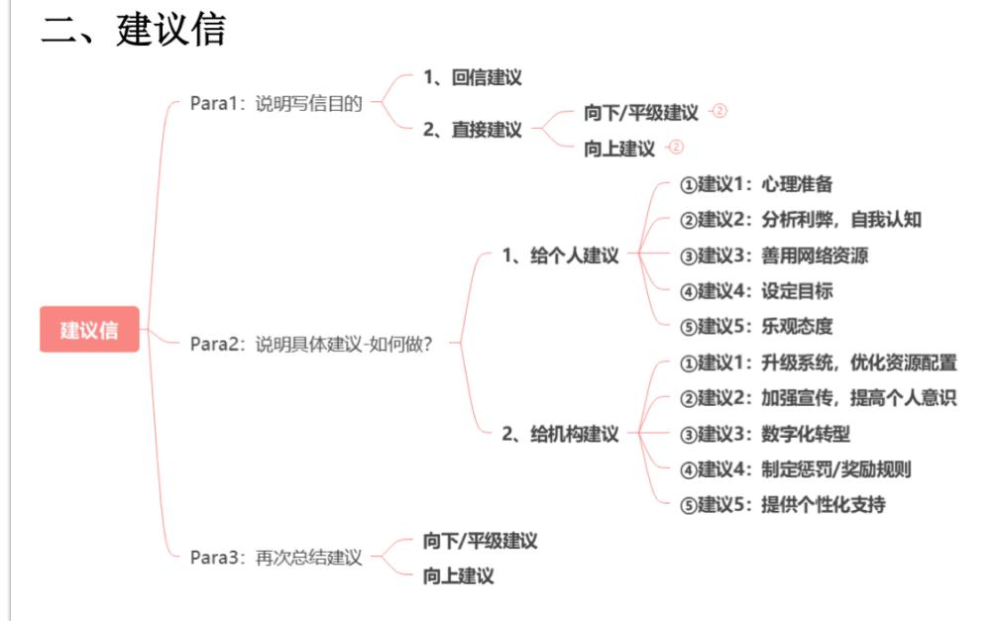

▼ 建议信
二、建议信

（一）首段：说明写信目的
1、回信建议
I am delighted to hear from you. In your email, you asked for advice on how to ____. I am more than willing to provide you with some suggestions.
很高兴收到你的来信。在邮件中，你询问了关于如何____的建议。我非常乐意为你提供一些建议。
I am delighted to receive your email, in which you sought advice on how to _. Here are my suggestions. 我很高兴收到你的邮件，你在信中寻求关于如何_的建议。以下是我的一些建议。
2、直接建议
1）向下/平级：
①表明身份，说明背景
As [身份], I’d like to / I am writing to / I’m delighted to hear that +[题干背景信息]
例：As a representative of the Students’ Union, I am writing to extend a warm welcome to you.
作为学生会的代表，我写信向你们致以热烈的欢迎。
②说明目的，提出建议
向下/平级：To help you [目的], I am pleased to offer several suggestions.
为了帮助你[做什么]，我很高兴为你提供一些建议。
2）向上建议
①表明身份，先夸夸
向上：As[身份], I truly appreciate the favorable[优点]you provide for us.
例：As a senior student, I truly appreciate the favorable environment you provide for us.
作为一名大四学生，我非常感激您为我们提供的良好学习环境。
②说明目的，提出建议
向上：However, there is still room for improvement in terms of[问题], and I have a few suggestions.
然而，在某个[问题]方面还有改善空间，我有一些建议。
（二）中间段：说明具体建议-How
1、给个人建议（外国学生）
建议1：心理准备First and foremost, you should get mentally prepared
for[the new journey]，so you won’t feel overwhelmed by unexpected
challenges.Copyright ©2024大道至简Loru. All Rights Reserved. 10/37
首先，你应该为[新的旅程]做好心理准备，这样就不会因意外的挑战感到不知所措。
②建议2：分析利弊，自我认知
To begin with, I hope you can weigh the pros and cons of each[选择]and assess your own strengths and interests objectively.
首先，我希望你可以权衡每个[选择]的利弊，并客观评估自己优势和兴趣。
③建议3：善用网络资源
In addition, it is essential to make full use of the rich learning resources on the Internet to deepen your understanding of[信息]and sharpen your[相关]skills.
此外，要充分利用互联网上丰富的学习资源，深入了解[信息]，并提升你的[相关]技能。
④建议4：设定目标
Moreover, another important step is to set clear and achievable goals, which will guide your progress and keep you motivated.
此外，另一个重要的步骤是设定清晰且可实现的目标，这将指引你的进步，并保持你的动力。
⑤建议5：乐观态度
Last but not least, make sure to stay optimistic throughout the process, as a positive attitude can keep you moving forward.
最后但同样重要的是，一定要在整个过程中保持乐观，因为积极的态度会不断推动你前进。
2、给机构建议（宏观系统）
①建议1：升级系统，优化资源配置
First and foremost, there is an urgent need to upgrade the outdated facilities, which goes a long way towards encouraging [人] to engage in [事情].
首先，迫切需要升级陈旧的设施，这对于鼓励[人]参与[事情]将起到极大的推动作用。
②建议 2：加强宣传，提高个人意识
In addition, it is imperative to help[人]realize the value of[XX]and foster an awareness of[XX]through a series of informative lectures/reports.
此外，通过一系列信息丰富的讲座/报告，帮助[人]认识到[XX]的价值，并提高对[XX]的意识是至关重要的。
③建议3：数字化转型
Moreover, I would like to suggest that an online[XX]system be set up, which allows [人]to do[事情], significantly improving their overall experience and engagement.
此外，我建议建立一个在线[XX]系统，这将使[人]能够做[事情]，从而显著提升他们的整体体验和参与度。
④建议4：制定惩罚/奖励规则
Furthermore, it is advisable to introduce a [punishment/ reward ] system to incentivize [人] to actively participate in [事情], ensuring better compliance and fostering positive behavior.
此外，建议引入一个[惩罚/奖励]机制，以激励[人]积极参与[事情]，从而确保更好的执行效果并促进积极行为。
⑤建议5：提供个性化支持
Lastly, I recommend offering personalized support to cater to the diverse needs of [人], which will help them better navigate [具体情境或问题] and achieve their goals.
最后，我建议提供个性化支持，以满足[人]的多样化需求，这将帮助他们更好地应对[具体情境或问题]，并实现他们的目标。
（三）结尾段：总结收尾
1、向下/平级
I sincerely hope that my suggestions prove beneficial to you. If you need any further information or assistance, please do not hesitate to contact me.
我真诚希望我的建议对你有所帮助。如果你需要进一步的信息或协助，请不要犹豫与
@大道至简Loru
我联系。
I hope my suggestions will be of benefit and wish you [美好祝愿]. Feel free to reach out if you need any further information or assistance.
我希望我的建议对你有所帮助，并祝你[美好祝愿]。如果你需要更多信息或帮助，请随时联系我。
2、向上
感谢您在百忙之中抽出时间阅读这封信。如果您能认真考虑这些建议，我将不胜感激。
真题例子
2012年小作文
- 17
Directions: Some international students are coming to your university. Write them an email in the name of the Students’ Union to
extend your welcome and
provide some suggestions for their campus life here.
模板范文（135词）
Dear international students,
Para1: ①As a representative of the Students’ Union, I am writing to extend a warm welcome to you. ②To help you settle into campus life smoothly, I am pleased to offer some suggestions that I hope will enhance your experience here.
Para2: ①First and foremost, you should get mentally prepared for the new environment, so you won’t feel overwhelmed by unexpected challenges. ②Additionally, it is essential to make full use of the rich learning resources at this university to sharpen both your language and academic skills. ③Lastly, be sure to set clear and achievable goals, which will guide your progress and keep you motivated throughout your studies here.
Para3: ①I hope my suggestions will be of benefit and wish you a fulfilling and enriching campus life here. ②Feel free to reach out if you need any further information or assistance.
Yours sincerely,
Li Ming
范文翻译：
亲爱的国际留学生们：
第一段：①作为学生会的代表，我写信向你致以热烈的欢迎。②为了帮助你顺利适应校园生活，我很高兴为你提供一些建议，希望这些建议能提升你的校园体验。
第二段：①首先，你应该为全新的环境做好心理准备，这样你就不会因遇到意料之外的挑战而感到不知所措。②其次，充分利用学校丰富的学习资源，提升你的语言和学术能力也是至关重要的。③最后，务必设定明确且可实现的目标，这将引导你的进步，并在整个学习过程中保持你的动力。
第三段：①我希望我的建议对你有所帮助，并祝你在这里拥有充实且丰富的校园生活。
②如果你需要进一步的信息或帮助，欢迎随时联系我。
诚挚的，
Li Ming
诚挚的，
李明
Li Ming